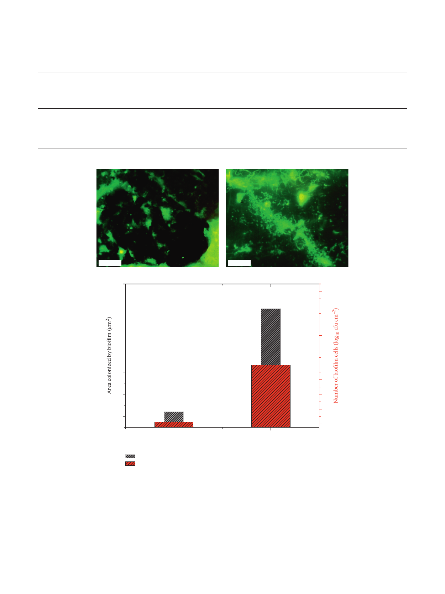

International Journal of Microbiology
9
Table 2: Contact angles, surface tension parameters (Lifshitz-van der Waals component(cLW); electron acceptor (c+), electron donor
component (c− )), and hydrophobicity (ΔGiwi). e means ± SD for three replicates are given.
P. aeruginosa and
granites
Contact angles (°)
θ
θ formamide
diiodomethane
θ water
Surface tension: components and
parameters (mJ m−2)
cLW
c+
c−
Hydrophobicity of cell
surfaces
ΔGiwi (mJ m−2)
Granite Rosa
Porrino
Granite Gris Pinhel
Pseudomonas
aeruginosa
71.17 ± 0.23
64.40 ± 0.23
70.07 ± 0.86
102.50 ± 1.15 117.07 ± 0.45 22.23 ± 0.09 1.60 ± 0.06 0.67 ± 0.09
58.30 ± 0.17 53.00 ± 0.45 26.10 ± 0.07 0.20 ± 0.03 40.90 ± 0.55
47.37 ± 0.35 25.33 ± 0.31 22.83 ± 0.50 1.00 ± 0.10 69.1 ± 0.85
−63.47
24.45
52.90
20 μm
(a)
27
20 μm
(b)
24
26
22
20
25
18
24
16
14
23
12
22
10
8
21
6
Gris Pinhel
Granite type
Rosa Porrino
Area colonized by biofilm
Number of biofilm cells
(c)
Figure 6: P. aeruginosa biofilm formation on the Gris Pinhel (a) and Rosa Porrino (b). (c) Number of biofilm cells (red bar) and the
percentage of the area colonized by P. aeruginosa biofilm on surfaces (black bar) on granite Rosa Porrino and granite Gris Pinhel.
microbial population under the concentration of 1.61 % and
a contact time of 15 min. Smith et al. [39] studied the efficacy
of many biocides (benzalkonium chloride, chlorhexidine
gluconate, and triclosan) and found that none of them was
100% efficient against P. aeruginosa biofilm. In addition,
Silva et al. [12] also evaluated the effectiveness of the cleaning
and disinfecting procedures in controlling Staphylococcus
aureus, Salmonella enteritidis, and Pseudomonas fluorescens